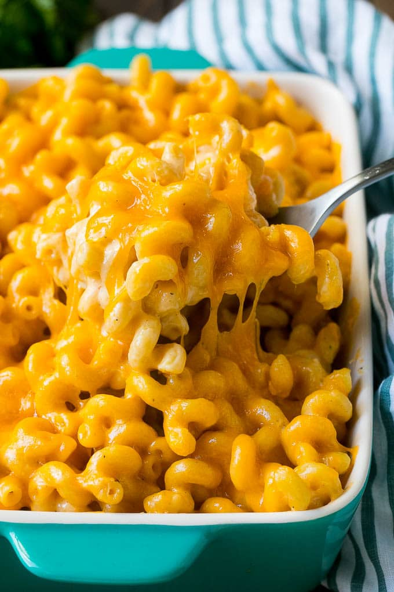

Mac n Cheese
Mac n Cheese

Description
This is just a downright classic. Perfect for a quick lunch, and can also work as a dinner side. The kids will love it, and so will you!
Ingredients
- 6 cups water
- 1 package KRAFT Macaroni & Cheese Dinner
- 1/4 cup margirine
- 1/4 cup milk
Steps
- Boil water in a medium sized saucepan
- Stir in macaroni; cook 7 to 8 minutes or until tender, stirring occasionally
- Drain the water in a collander and return noodles to the saucepan
- Add margarine or butter, milk and Cheese Sauce Mix and stir until mixed well